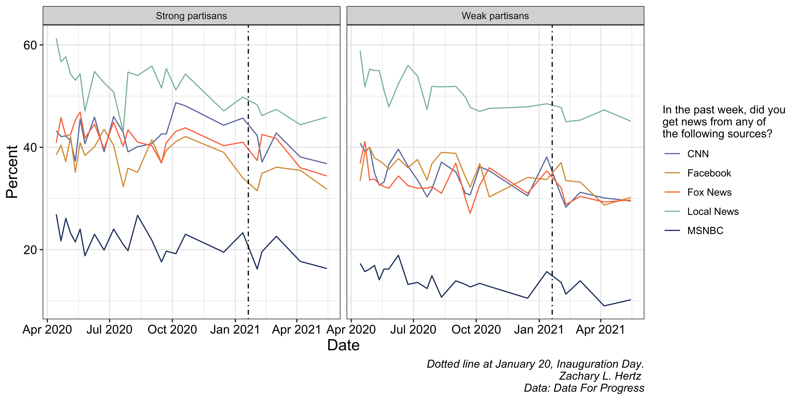
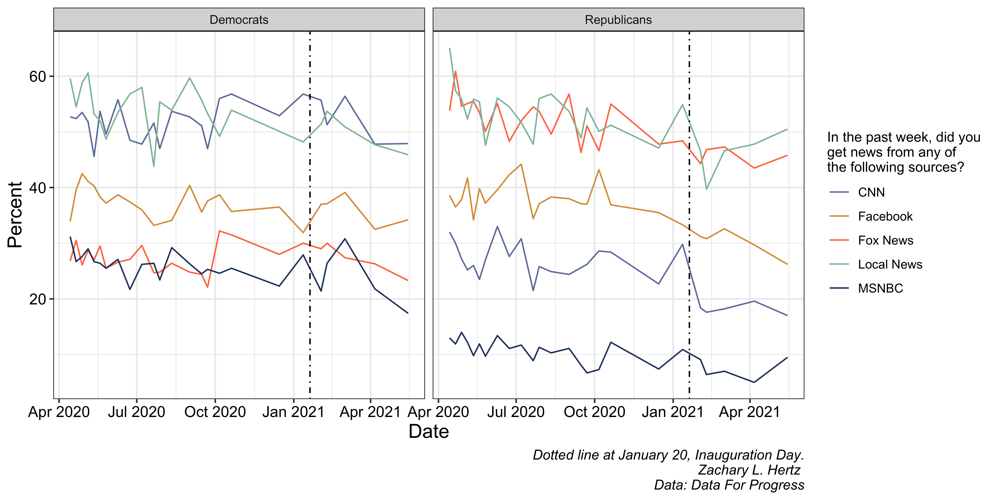
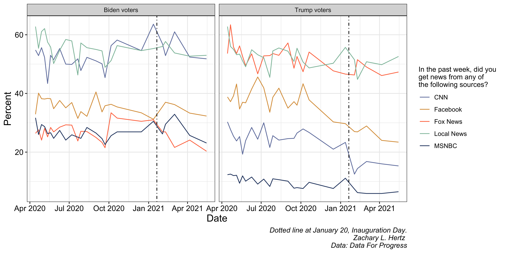

Tracking the Drop in News Interest
Data shows a decline in news interest is consistent across party lines, not partisan
As cable news viewership dropped over the first half of 2021, political commentators were quick to attribute this drop in news interest to the Biden administration. But the first half of 2021 has also seen the Covid-19 pandemic – one of the largest news stories in 2020 – rapidly drop in salience since January thanks to falling infection rates and the largely successful vaccine rollout. As a result, it remains difficult to determine what role the Biden administration and the decreased need to closely follow the pandemic have played as potential drivers of the drop in news interest. I used the Data for Progress Covid-19 Tracking Poll to investigate.
Share of Americans who follow politics “most of the time” fell 15 percent consistently
The Data for Progress Covid-19 Tracking Poll, with 25 waves since April 2020, has included a number of questions tracking Americans’ opinions on politics and the pandemic. As part of the survey, respondents answer a question tracking general news engagement:
Some people follow what’s going on in government and public affairs most of the time, whether there’s an election going on or not. Others aren’t as interested. Would you say you follow what’s going on in government and public affairs…
- Most of the time
- Some of the time
- Only now and then
- Hardly at all
The share of American adults who say they follow politics “most of the time” dropped from 41.8 percent in January to 35.5 percent in May, marking a 15 percent decline in the highest level of news engagement. In the same time period, the share of those who follow politics “some of the time” and “hardly at all” both increased 3 percentage points, while the share of those who follow politics “only now and then” remained relatively stable.

If this drop in the share of highly engaged Americans is driven mainly by the effects of the Biden administration, we might expect to see the trend in news interest differ among partisan lines. The data does not reflect a political difference in changing news interest, however. Breaking the sample down by party identification, presidential vote, and strength of partisan identification, we see a consistent 15 percent decline in the highest level of news engagement between January and May.

Democrats and Republicans had similar trends in the levels of their news interest between October 2020 and January 2021. But while the share of Republicans who followed political news “most of the time” immediately started decreasing from 47.3 percent in January 2021 to 39.8 percent in May 2021, the share of Democrats who were highly-engaged followers hovered around 47 percent until March 2021, but declined to 38 percent by May.
We might also expect that any observable effects of the Biden administration on news interest are conditional on having voted for or against his presidency. Unfortunately, the number of nonvoters in the sample is too small to draw reliable conclusions from, but we might imagine that news interest changed differently among Biden voters, who might become less engaged under an in-party administration, and Trump voters, who suddenly find themselves in the outparty. But while total levels of those most interested in following government affairs was higher among the voters than partisans as a whole, the share of respondents who follow government “most of the time” still dropped 15 percent among both Biden and Trump voters.

Notably, the share of those who say they follow government and public affairs “most of the time” rises through the late fall of 2020 among voters from both parties, a trend that is not visible when subsetting by party identification instead of presidential vote choice. But both Biden voters and Trump voters see significant declines of 15 percent in the share of respondents who follow the news most closely between January and May of 2021.
Another approach to investigate whether the drop in news interest differs by political engagement is to examine how strong and weak partisans differ in their news consumption patterns. Strong partisans might be expected to maintain higher engagement regardless of who is in power, while weak partisans could be more susceptible to administration-driven changes in interest.

The data shows that both strong and weak partisans experienced similar declines in high-level news engagement after January 2021. Strong partisans, who maintained consistently higher rates of following politics “most of the time” throughout the period, still saw their engagement drop from around 55-60 percent to 45-50 percent. Weak partisans experienced a parallel decline from roughly 35 percent to 30 percent.
News source consumption patterns mirror overall engagement trends
Beyond general political interest, the survey also tracked specific news source consumption, asking respondents whether they got news from various outlets in the past week. The results show broad declines across multiple news sources after January 2021.

Local news consumption shows the steepest decline, falling from around 60 percent in early 2020 to below 50 percent by early 2021, and continuing to decline through May. Cable news networks (CNN, Fox News, MSNBC) all experienced similar patterns, with viewership peaking during the election period and dropping significantly after inauguration. Even social media news consumption through Facebook declined notably.
When broken down by partisan strength, the patterns remain consistent across both strong and weak partisans, suggesting that the decline in news source consumption is not primarily driven by partisan disengagement.

Similarly, examining news consumption by party identification and presidential vote choice reveals parallel declines across different political groups, reinforcing the finding that this trend transcends partisan divides.


Conclusion
The evidence strongly suggests that the decline in political news interest during the first half of 2021 was not primarily driven by partisan reactions to the Biden administration. Instead, the data points to a broader, non-partisan phenomenon affecting Americans across the political spectrum.
Several key findings support this conclusion. The 15 percent decline in high-level political engagement was remarkably consistent across party lines, voter preferences, and levels of partisan strength. Republicans and Democrats, Biden voters and Trump voters, strong partisans and weak partisans all experienced similar drops in their likelihood to follow politics “most of the time.” This consistency suggests a common cause rather than partisan-specific reactions.
The timing also supports a pandemic-related explanation. The decline began precisely as COVID-19 cases were falling and vaccine distribution was accelerating, reducing the urgency that had driven news consumption throughout 2020. The pandemic had created an environment where staying informed about government actions felt critically important for personal safety and decision-making. As that immediate threat receded, so did the intense need to follow political developments.
Additionally, the 2020 election cycle had created an unusually high-engagement period that was unlikely to be sustainable. The combination of a contentious presidential election, a global pandemic, and significant social unrest had elevated political news consumption to extraordinary levels. Some decline from this peak was probably inevitable regardless of which candidate won the presidency.
This analysis suggests that commentators may have been too quick to attribute declining news interest to Biden-specific factors. While presidential administrations certainly influence the political news environment, the data indicates that broader contextual factors—particularly the winding down of the pandemic emergency—played a more significant role in the 2021 decline in political engagement than partisan reactions to the change in administration.
Citation
@online{lorico_hertz2021,
author = {Lorico Hertz, Zachary},
title = {Tracking the {Drop} in {News} {Interest}},
date = {2021-07-13},
url = {index.qmd/posts/2021-07-13-news-interest/},
langid = {en}
}